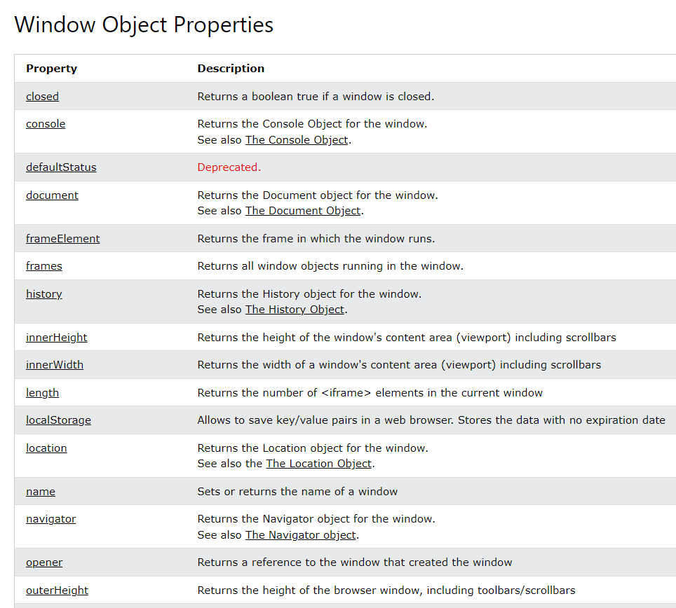

The Window interface is home to a variety of functions, namespaces, objects, and constructors which are not necessarily directly associated with the concept of a user interface window. However, the Window interface is a suitable place to include these items that need to be globally available.
